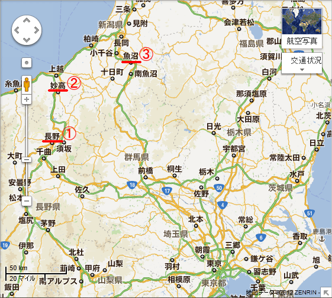
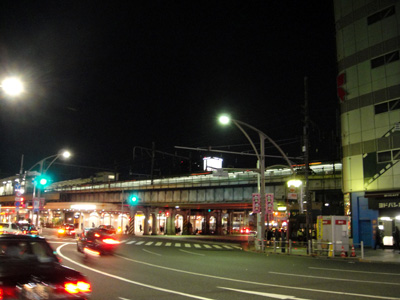
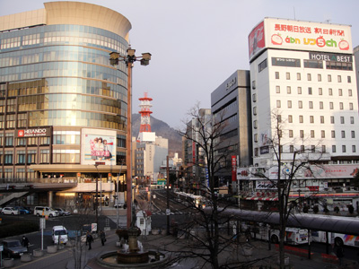
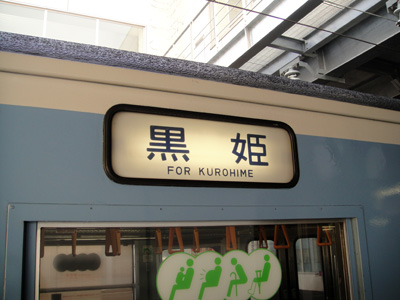
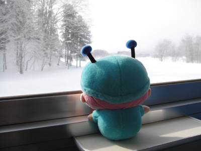
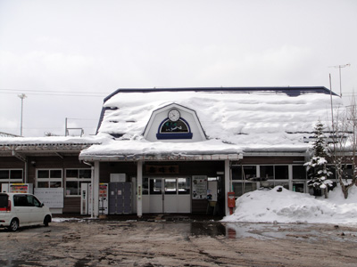
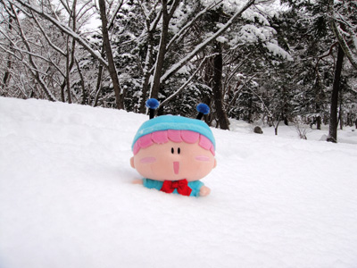
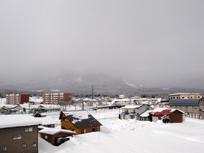
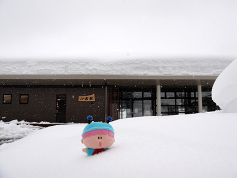
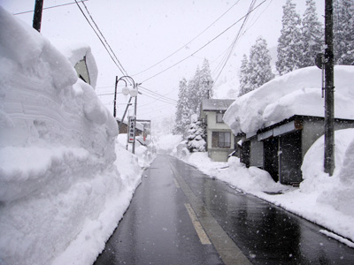

２０１１年の夏は、暑さを求めて熊谷市で気温３９度の高温体験をしてきました（こちら）。
せっかくなので冬バージョンを…ということで、２月１０日に今度は新潟県で雪体験を行いました。今回はその模様をレポいたします。
新潟県は雪のイメージが強いですが、日本海側はそんなに積もらないようです。豪雪地帯と言われるのは主に山の方で、今回は特に積雪の多い妙高地方と魚沼地方に目的地を定めてみました。

夜行バスで東京から①長野へ向かい、１日かけて②妙高と③魚沼に向かう計画です。

出発地点の上野駅で、長野行きの夜行バスを待ちます。
空気が乾いていて寒かった。。。

２月１０日朝。
長野駅に到着しました！
想像と違って全然雪が積もっていなくてびっくり！

長野駅からJR信越線に乗って妙高高原駅へ向かうのですが…。
いきなり計画にトラブル発生！
何と電車は大雪のため、ひとつ手前の黒姫駅までしか行けず。

電車もやっぱり黒姫行きになってます(T-T)。
ちなみに黒姫駅はぎりぎり長野県で、
県境をまたぐと雪の量がだいぶ変わるようです。

「ほぇ～っ、いつの間にか外は真っ白でしゅ（＞＜）」
電車に乗って数十分。
景色はだんだんと白くなっていきます。

②黒姫駅に到着～。
豪雪地帯の手前とは言え、かなり雪が積もっていて、
雪国らしさを感じます！

駅近くの公園は雪がどっぷり積もっていました。
雪が柔らかくてムルモがどんどん埋まる…。
雪国でやりたかったことが出来て、いきなり満足です(^^)。

黒姫の雪景色を堪能して、足早に黒姫を後にします。
この後は日本海側を経由して魚沼へ行くはずでしたが、大雪で電車が走っていないため、いったん長野に戻り、そこから新幹線で群馬県経由で向かうことになりました。当初の予定では２千円くらいの電車賃が、新幹線を使うことで１万円もかかってしまいました(T-T)。

③魚沼（小出駅）に到着～。
ちなみに電車（JR上越線）は大雪で止まっていたので、
新幹線の浦佐駅からタクシーでここまで来ています。
またまた３千円の出費が・・・。

道路の両脇に雪の壁が出来ていました。
まさに豪雪という表現が当てはまる光景です。
後でニュースで知りましたが、ちょうど訪れたタイミングは記録的な大雪だったようです。あちこちで雪下ろしの光景が見られて、地元の方のご苦労を察すると胸が痛みます。皆さんもいろんな場所を訪れて、場所によっていろんな生活があることを知って欲しいなと思います。
(2012/2/19)